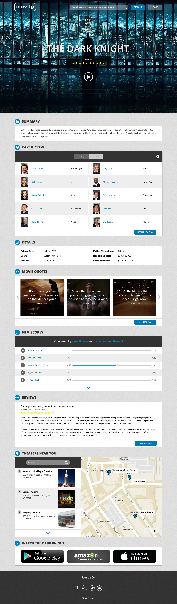
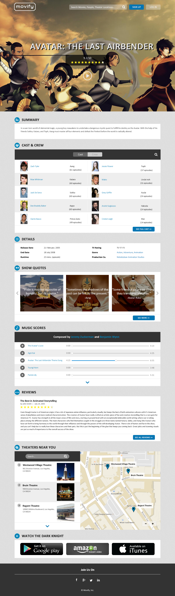

Movify is an idea I conceptualized that streamlines the process of researching and learning about upcoming movies by implementing a clean user interface with the outcome being a new user experience. Users are able to learn about new movies without having to go to multiple sites such as IMDb and YouTube. The movie trailer plays in the background and the user simply has to click the play button if they wish to watch the trailer. For details about the movie or theater locations, the user just has to scroll down.
For movies that have already been released, these pages will have a quote section highlighting the scenes that truly resonated with the audience. Over time, the hope is that the movie quotes will be user generated and a Movify community develops in the process. In addition, users will be able to listen to film scores right on the website page. We plan to have a Questions Page where users can ask about parts of the movie that confused them, read about people's interpretation of different scenes, ect. Furthermore, there is hope to add an Ask Me Anything (AMA) section on the site, where users can ask questions to well-known people in the movie and television industry. However, I realized the pages might seem feature intensive and that releasing a product for the first time requires one to create the most minimalistic version possible in order to find product/market fit.
Below is an example of what the Movie Profile Page of The Dark Knight would look like.

Below is an example of a Profile Page for a TV Series. The site is designed in a way that TV shows, films, and documentaries all have the same uniform layout.
|
|